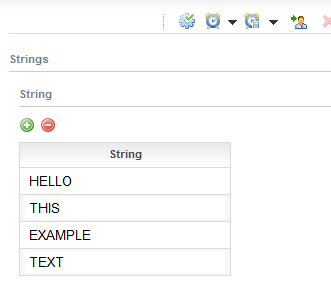

Figure: Process diagram
Stardust supports multiple execution instances. These multiple instances can be performed in parallel or sequentially.
Suppose a company needs a review task for a document review that should be performed by a specific number of users. The review is only considered as completed once all users have completed their review task. Instead of running a loop to give the task from one user to the next user once resolved, a multiple instances activity can be used. This task enables you to run a subprocess for each separate review task in a set of data.
Other common use cases are for example:
Multi instances tasks enable you to run a subprocess or application for each element of a data set. When this subprocess or application activity is performed, it creates a set of instances, one for each element of the data set. You can configure the activity to process these instances in parallel or sequentially. The entire multi instance block is completed when all instances are completed or aborted.
Sequential multiple instance activities are required if an instance should consider the result of the preceding instance.
If a multi instance activity is defined as sequential, all resulting instances are executed sequentially until the last instance has been completed. A new instance is generated for each data in the order they are received with the data set list after the previous instance has been completed.
Three horizontal lines indicate that the multi-instance activity is sequential.
Figure: Example Sequential Multi Instance Activity in the Eclipse Modeler
Figure: Example Sequential Multi Instance Activity in the Modeling perspective
Note
Please use the sequential processing type with care. In some cases it might lead to uncompleted processes.
In case an application exception occurs, the last activity instance is interrupted and sequential processing will resume after a recovery. If a system exception, or any other condition causing the transaction to roll back, occurs, all instances of the multiple instance activity will roll back.
Multiple instances defined as parallel are executed at the same time until all instances are completed.
Three vertical lines indicate that the multi-instance activity is parallel.
Figure: Example Parallel Multi Instance Activity in the Eclipse Modeler
Figure: Example Parallel Multi Instance Activity in the Modeling perspective
In case an application exception is thrown during the execution of an instance, this particular instance is interrupted and the other instances will be processed and completed normally. A recovery will restart processing of the interrupted instances.
If a system exception, or any other condition causing the transaction to roll back, occurs during processing of one instance, the corresponding activity thread will roll back. However, the other instances belonging to this multiple instance activity will not be affected.
The extraction of single elements from in data lists and assembly of out data lists from the return values of the single instances is performed via an index-based algorithm. Hence, each instance has access via the multiple instance access points to only its own in and out data element but not to the entire list.
Input and Output parameters are provided to specify the data parameters defined for the application or process interface accordingly.
If a subset of the instances in a multiple instance activity is aborted, the same semantics as in single-instance activities is employed:
By default, during sequential execution, all instances are processed in one transaction. For large numbers of instances, this can lead to processing times exceeding the transaction timeout and hence in rollbacks of the transaction. In order to prevent this from happening, you can set a maximum batch size. This is especially helpful if the number of instances can vary strongly and very large numbers of instances (thousands and more) are possible.
If you specify a batch size, the transaction will be committed after processing the specified number of instances. New transactions will be started for batch-wise processing of the remaining instances thus limiting the transaction duration and preventing rollbacks. Please note however, that in case of exceptions, individual batches could roll back individually. In this case, a recovery will be required to restart processing for the remaining instances. Hence, batch processing is not advisable in situations where all instances are absolutely required to be processed within a short timeframe or where temporary states of partial processing would lead to major issues.
Note that if the activity is an interactive activity, setting the batch size has no effect,
since the inherent implementations of the interactive activities are causing a transaction
commit after each activity create or suspend action, thus interactive multi-instance
activities are always behaving as if the batch size is set to 1.
The three most common examples for batch size settings are the following:
x: for very large lists to avoid transaction timeouts1: to commit every iteration, e.g. for subprocesses to only roll back
the last subprocess in case of an error and not affect the previous iterationsYou can specify application activities and subprocess activities using a process interface as multi-instance activities. The following activity types are not supported as multiple instance activities:
In case multiple instance execution is required for any of these activity types, you can re-factor these activities into a subprocess using a process interface with the required parameters.
The copy all data is supported for multiple instance activities, as well. For more information, please refer the chapter Data Copy and Mapping Semantics.
Multiple instance processing, both parallel and sequential, is not supported for activities that are Relocation Source.
Multiple instance parallel processing is not compatible with subprocesses of Execution type Synchronous/Shared Data. The reason is that in or out data mappings are performed concurrently on the same set of data, thus some of the instances will lose their own input and instead process the input from a concurrent activity instance. However for sequential processing the Execution type Synchronous/Shared Data is supported as each subsequent data mapping is performed after the previous activity has terminated.
The following list data types are supported as input or return data of multiple instance activities:
| Type | Restrictions | Comments |
|---|---|---|
| Document Lists (including Process Attachments) | none | |
| Folder Lists | none | |
| XSD-List typed nodes of structured data | Note that currently it is not possible to access list values of imported structured data types in the Eclipse modeler. | internally as well as externally defined types |
| java.util.List types | none | typed lists (untyped lists would return plain objects without specified method access types) |
| Java arrays | supported as input type only | |
| Java-based Enumeration types | supported as input type only | supported via array <some enum>.getClass().getEnumConstants() |
The following processing mode types can be set for an activity:
In the Eclipse modeler, the processing mode is set via the Control Flow. To use the multiple instance processing mode, select Multi Instance as Loop type.
If Multi-Instance is selected as Loop type in the Control Flow of an activity, the following Input and Output Parameters can be defined to specify the data parameter definitions used for multiple instance processing:
For details on setting control flow for multiple instance activities in the Eclipse modeler refer to section Control Flow of chapter Specifying Activities.
Data mapping access points for multiple instance activities in the Eclipse modeler follow the existing semantics for setting the same for application activities and process interface.
In the Modeling perspective, the processing mode can be set in the property pane of the activity. A Processing property page is available, where the parameters can be selected.
Selecting a processing mode for Multiple instance parallel or Multiple instance sequential enables multiple instance processing for the activity and adds the appropriate symbol to the activity in the model diagram.
For details on settings for multiple instance activities in the Modeling perspective refer to section Setting Processing Type Properties of chapter Specifying Activity Properties in the Business Process Modeling Handbook.
Input and Output Parameters can be defined to specify the data parameter definitions used for multi-instance processing.
Data mapping access points for multiple instance activities follow the existing semantics for setting the same for application activities and process interface. In the Modeling perspective, they can be easily identified in the Input Access Point and Output Access Point drop-down lists to be access points for multiple instances activities as they have the term List appended.
In the Model & Go! perspective, Activity Groups can be configured to spawn a Sub-Process Instance for each unique instance of the Primary Business Object's referenced Business Object.
For details please refer to the chapter Working in the Process Definition View of the Model & Go! Handbook.
The limit of the list size which can be used with the new feature without running into transactional errors or performance issues depends on the layout of the runtime environment. For the standard setup on a small machine (4 cores) list sizes up to 10000 entries have been tested before running into transactional problems.
In this example we create a process to review a list of data and edit it if required. The review and update is done for each data element separately.
First we create a model in the Modeling perspective with the following data types and data:
Now we create a process that we want to use as subprocess. We set the subprocess type to Provide Process Interface and enter parameter definitions that can be used as access points for the data flow of the data list.
As in data parameters we define the primitive String data for retrieving the data element of the current index and the primitive Number data, which will be used to show the current index of the data element. Similarly, we define the primitive String data as out data parameter to provide changes in the data element.
Figure: Process Interface settings
Then we enter two activities, one to display the index of the data element and one to review and update the data element.
Figure: Subprocess Diagram
To create the subprocess activity, drag the created subprocess to the diagram canvas of the main process.
In the General Properties pane, we select Subprocess with Execution type Synchronous/Shared Data and processing type Multi instance Sequential.
Figure: Setting Subprocess properties
In the Processing Properties page of the subprocess activity, we select the processing type Multi-instance Sequential if not already set.
We define the input and output parameters to apply to the parameters specified for the process interface accordingly. The input parameter definition points to the list data elements that we want to use to create activity instances from. Whereas the output parameter points to the array element used to capture data from the current activity instance. The index parameter provides the index of the list data element, which is currently processed.
Figure: Setting the processing type and parameters
For the main process we need the below mentioned tasks in the following sequence:
Figure: Main process with multiple instance activity
We use the following data flow for our String list:
As access points to the subprocess activity we select the input and output parameters for the processing of the multiple instance and the data path of the data elements accordingly.
Figure: Setting the access points
To test our example, we start the main process, enter values in the data list and complete the activity.
Figure: Entering data in the data list
At first the count of the current index is displayed, which is 0 for the first entry. Complete the activity.
Figure: Current index
Now the subprocess activity displays the first data element of the list. Review and optionally edit the String and complete.
Figure: Enter data element
For each data element that we have entered, this process is repeated. Once the last data element is reviewed, the activity to display the result is invoked. We can see the complete data list with the edited Strings.
Figure: Edited Data List
In this example we create a process where a list of String data is converted to upper case letters via a Message Transformation application. The converting is done for each data element separately.
First we create a model in the Modeling perspective with a structured data type and according data with a list of Strings.
Now we create a message transformation application. We enter parameter definitions that can be used as access points for the data flow of the data list.
As input parameters we define a primitive of type Text for retrieving the data element of the current index. Similarly, we define a primitive of type String as output parameter to provide the converted String.
Figure: Parameter settings for the Message Transformation
In the Configuration tab, we map the input parameter to the output parameter and use the String method toUpperCase() to convert the String to upper case letters.
Figure: Message Transformation Configuration
To create the process we:
Figure: Process diagram
In the Processing Properties page of the application activity, we select the processing type Multi-instance Sequential.
We set the parameters to apply to the parameters defined for the message transformation application accordingly. In this example, we leave the Index Parameter empty as we do not use it.
Figure: Setting the processing type and parameters
Now we create the data flow for our String list:
As access points to the application activity we select the input and output parameters for the processing of the multiple instance and the data path of the data elements accordingly.
Figure: Setting the access points
To test our example, we start the main process, enter values in the data list and complete the activity.
Figure: Entering data in the data list
For each data element that we have entered, the message transformation is converting the String to upper case letters. Once the last data element is converted, the activity to display the result is invoked. We can see the complete data list with the converted Strings.

Figure: Converted Data List
Assume we have three Business Objects of the following structure:
Figure: Structured data type for VENDOR data
Figure: Structured data type for PRODUCT data
Figure: Structured data type for DISTRIBUTOR data
Consider the following relationships of the VENDOR Business Object:
Figure: Relationships of VENDOR data
Activity Groups can be set up to spawn sub-process instances from either Products of Vendor or Distributors of Vendor.
Suppose the instances of VENDOR are the following:
| VendorId | ProductIds | DistributorIds |
|---|---|---|
| ACME | 1,2,3 | A,B,C |
| USA VENDING | 4,5,6 | E,F,G |
| MEGA CORP | 7,8,9 | H,I,J |
For a Process Instance with VendorId = ACME, sub-process instances would be spawned as shown in the graphic below:
Figure: Spawned Sub-Process Instances